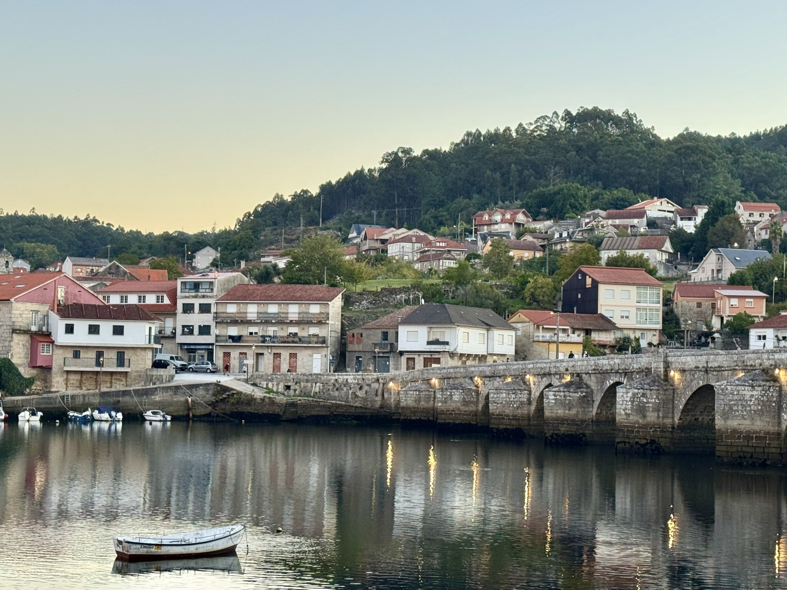
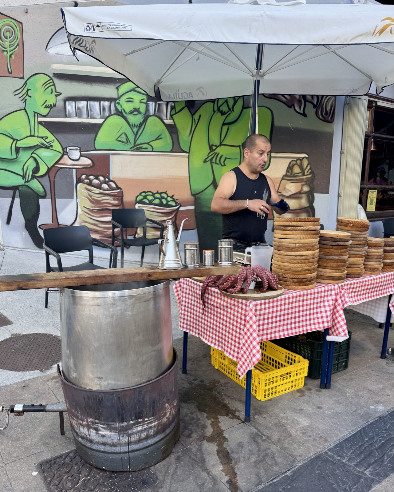
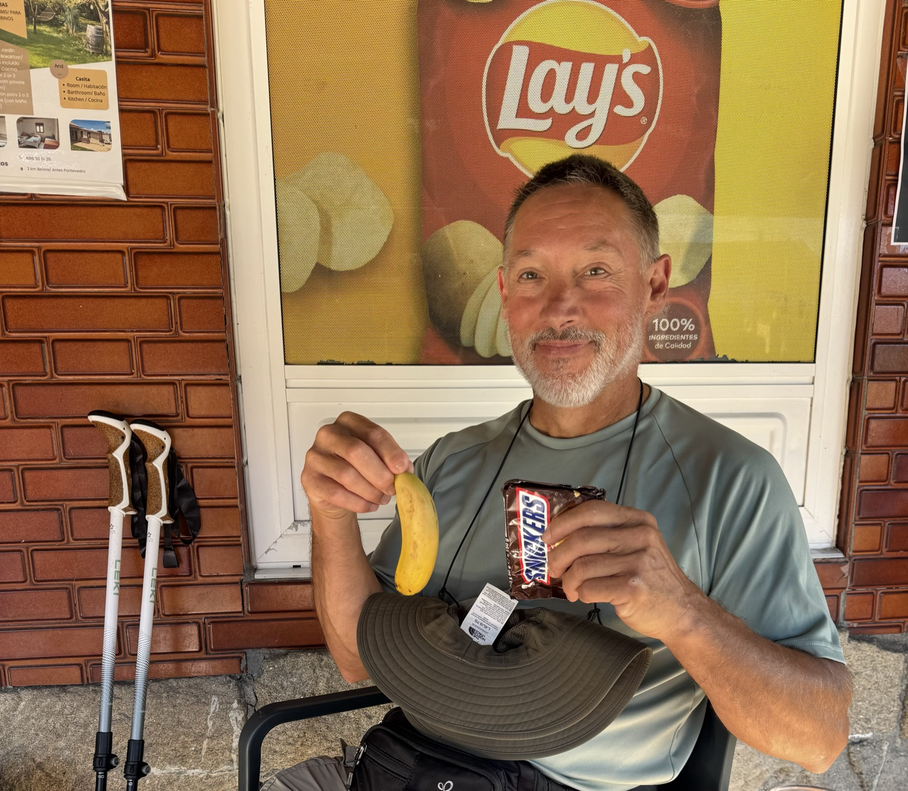
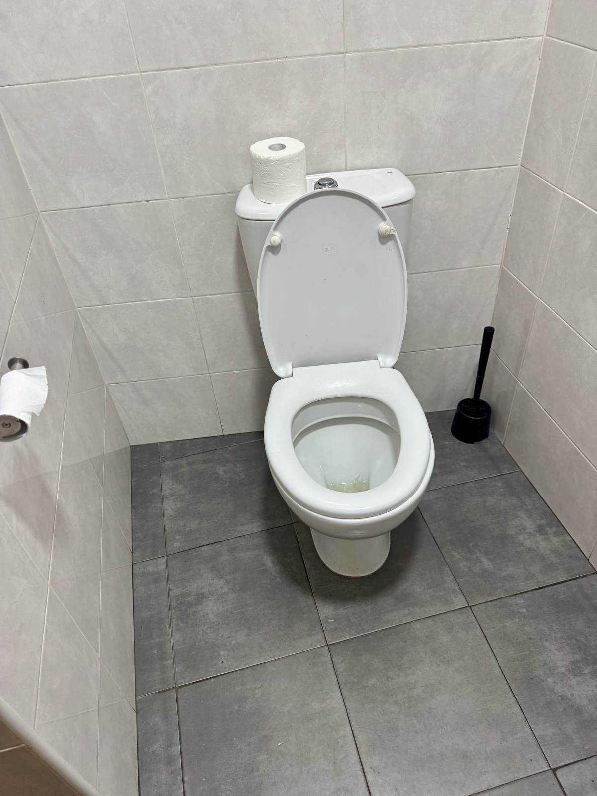
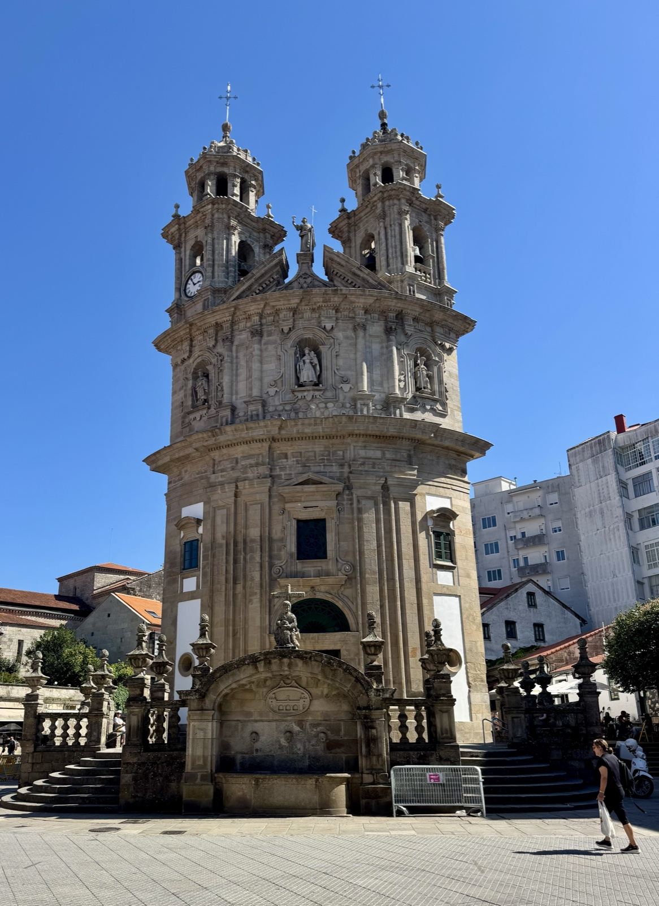

Stage 9: Arcade to Pontevedra
Data: 8.23 miles, 883 feet of elevation, 2:58 hours moving time,
3:41 total time.
Hotel: GBC Avenida Pontevedra Hotel
Our journey began seaside this morning in the beautiful port of Arcade. A later start in the dawn felt strangely luxurious for our short 8 mile excursion through the village and the forests of Vilaboa into the beautiful medieval town of Pontevedra. We passed a remarkably well-kept medieval bridge by the sea where Napoleon suffered a terrible defeat against the Spaniards. As the sun rose over the bridge, it was hard to imagine the historical bloody conflict as the rowboats gently rested on the shore and pilgrims sauntered over the inviting stone structure.

Throughout the village small cloth covered tables appeared with pilgrim offerings—fruit, baked goods, trinkets, and sometimes more elaborate offerings of jewelry or Camino memorabilia. Of course it’s all on the honor system.
The Camino culture reminds me of a well-run elementary school—kindness is rewarded, peacefulness is the unspoken rule, everyone matters, singing and music are for sharing, making art to celebrate “your” Camino/ accomplishment is valued. Everyone is a potential friend, helper, or source of inspiration. The pilgrim in the chair, the pilgrim with one leg, the pilgrim with one arm, and the countless limping, patched-up, and wounded pilgrims who either passed me/us on the trail or who extended a cheery “Buen Camino!” when I/we passed them. I will hold all these pilgrims in my heart as I continue my journey.
The Camino also calls local musicians to soothe, inspire, and delight pilgrims passing through the forest. Yesterday, I was greeted by a harpist who sat on a large granite bolder gently stroking her wooden instrument. Several pilgrims circled around her taking a break from the most difficult section of stage 8. Today we strolled through a “Sherwood Forest” section of stage 9 and were greeted by a classical guitarist who sang beautiful traditional Spanish songs, while occasionally accompanying himself with a harmonica as well. And of course—our merry little band of pilgrims are creating our own trail repertoire by rewriting musical lyrics, rock and roll classics, and odd jingles from our childhoods. Our compilation of pilgrim hits will not be sold in stores…
Snack vendors and cafes are plentiful on the trail—but the octopus cafe was quite unusual! Sadly, we are often faced with hard choices nutritious snacks like fruit or the joy of a Snickers bar, croissant, or enormous custard pastry! Gary usually makes the right choices, but today was tough. In the end, to his credit, the banana won.


You might be wondering why I’ve included a bathroom photo. Stranger choice?! My point is that you would NEVER find consistently clean bathrooms on a drive across any state in the USA. We’ve all seen bathrooms on state highways, in small cafes, in chain restaurants. The same was true in Portugal. The bathrooms are clean! A delightful surprise and a polite suggestion to American business owners.

Finally—we landed in the gorgeous village of Pontevedra on the early side. Beautiful medieval buildings and churches surprise you as they are squeezed between more modern structures. The old and the new somehow find each other in this beautiful and friendly village.
